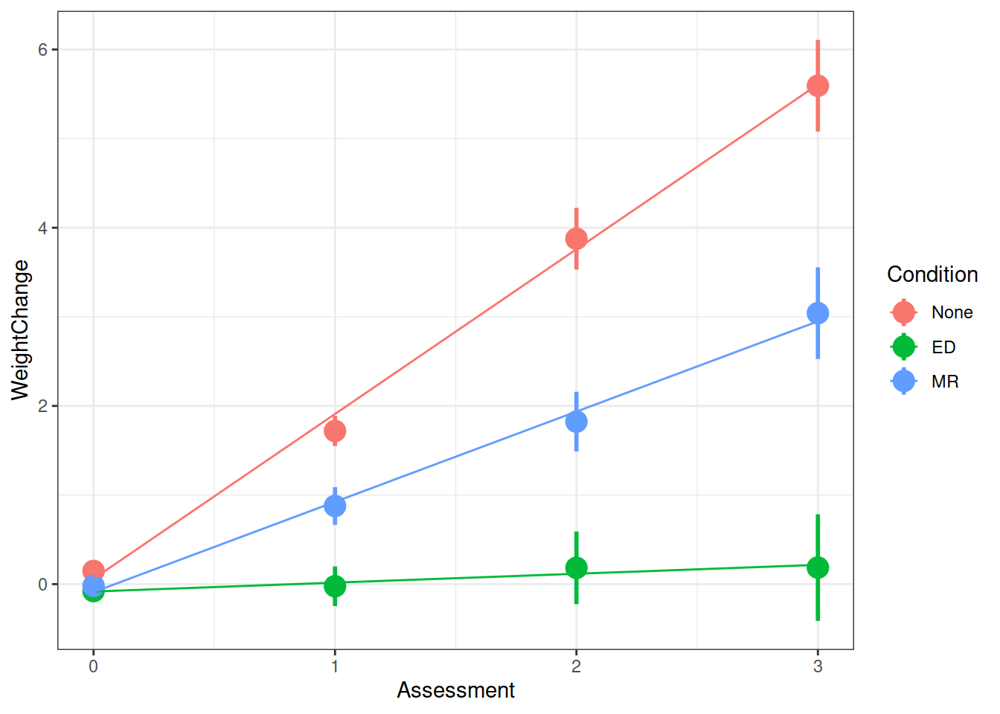
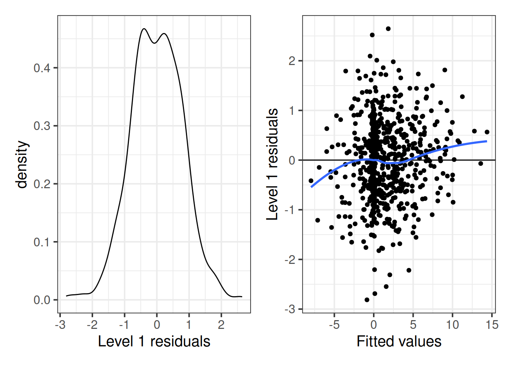
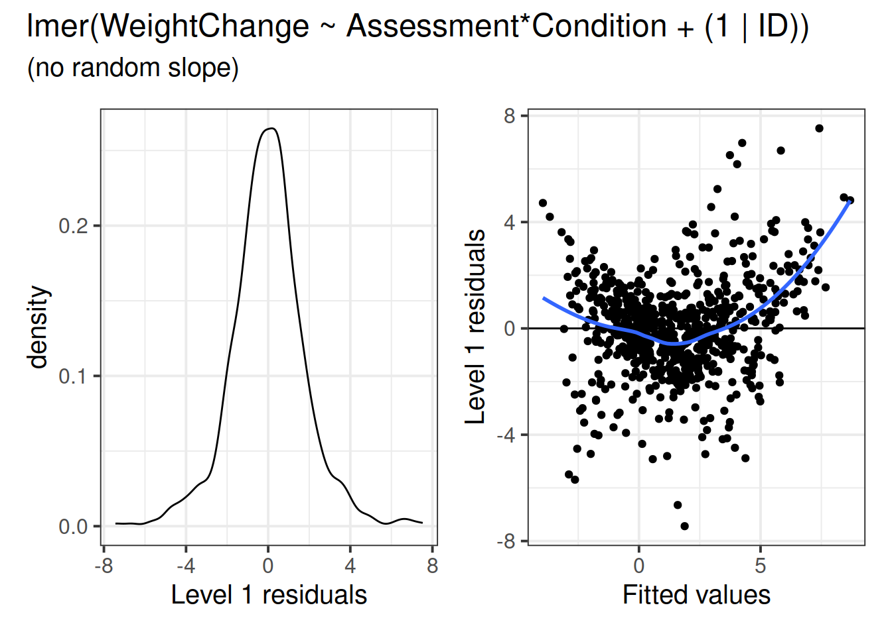
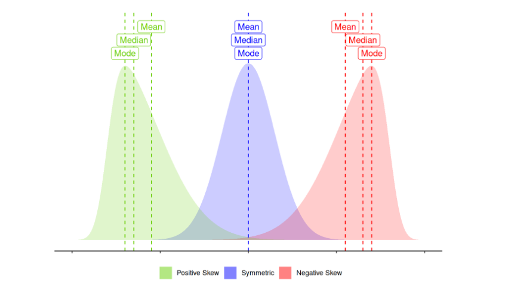
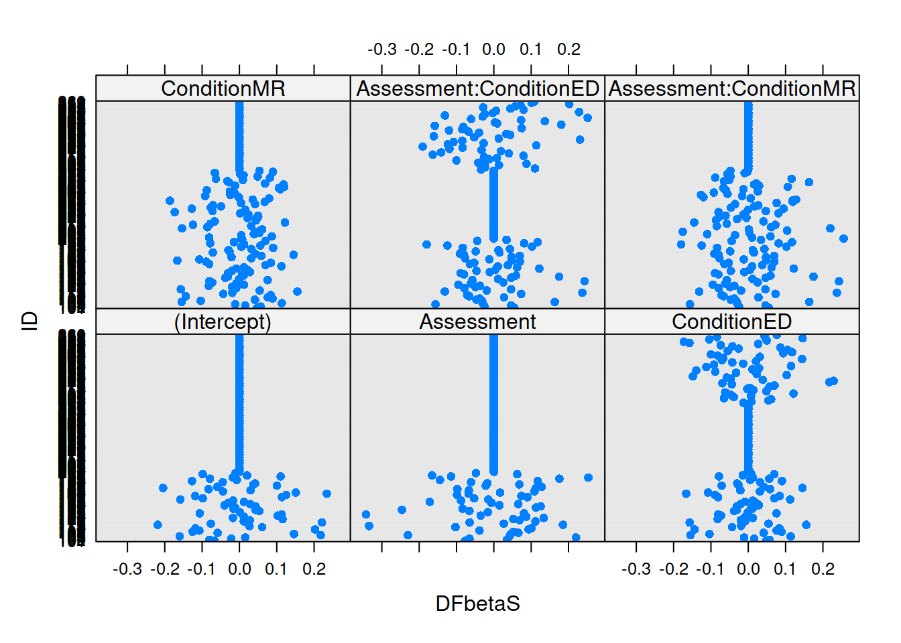
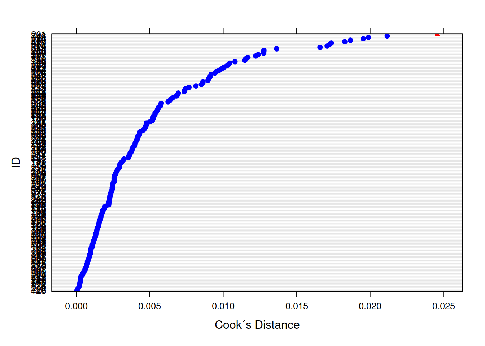
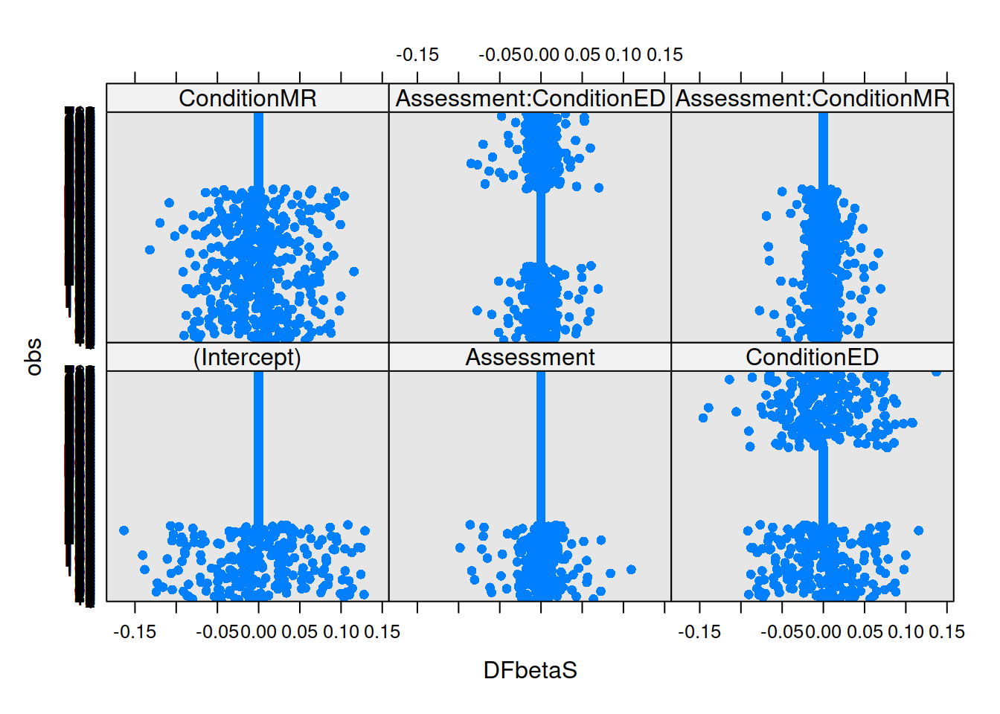
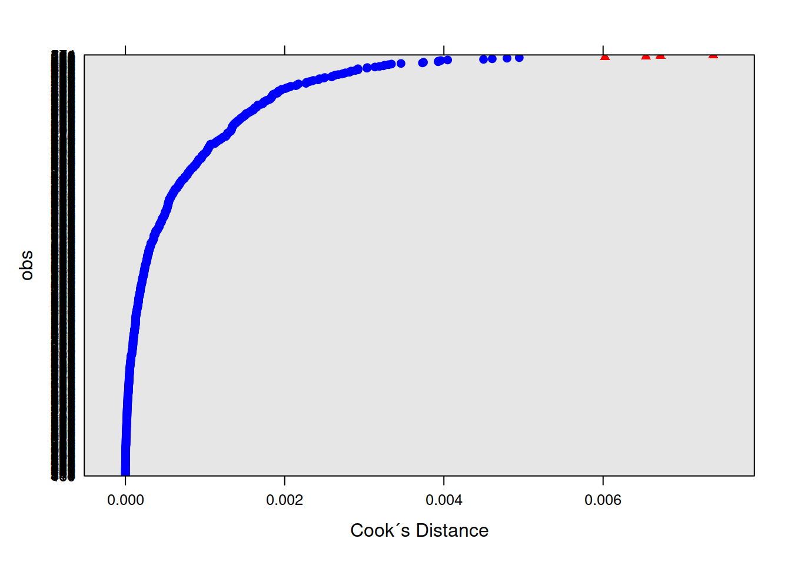

For this example, we are going to re-use the WeightMaintain data, which you can find in the exercises from Week 1.
The codebook is copied below to remind you of the data generating process.
library(tidyverse)
load(url("https://uoepsy.github.io/data/WeightMaintain3.rda"))
summary(WeightMaintain3)## ID Condition Assessment WeightChange
## 101 : 4 None:240 Min. :0.00 Min. :-8.3781
## 102 : 4 ED :240 1st Qu.:0.75 1st Qu.:-0.5024
## 103 : 4 MR :240 Median :1.50 Median : 0.7050
## 104 : 4 Mean :1.50 Mean : 1.4438
## 105 : 4 3rd Qu.:2.25 3rd Qu.: 2.8806
## 106 : 4 Max. :3.00 Max. :14.9449
## (Other):696We fitted the multilevel model specified below:
\[ \begin{align} & \text{for observation }j\text{ from subject }i \\ \quad \\ & \text{Level 1:} \\ & \color{red}{WeightChange_{ij}} = \color{blue}{\beta_{0i} \cdot 1 + \beta_{1i} \cdot Assessment_{ij} + \beta_{2i} \cdot ConditionED_{ij} + } \\ & \color{blue}{\beta_{3i} \cdot ConditionMR_{ii} + \beta_{4i} \cdot Assessment_{ij} \cdot ConditionED_{ij} + } \\ & \color{blue}{\beta_{5i} \cdot Assessment_{ij} \cdot ConditionMR_{ij}} + \varepsilon_{ij} \\ & \text{Level 2:} \\ & \color{blue}{\beta_{0j}} = \gamma_{00} + \color{orange}{\zeta_{0i}} \\ & \color{blue}{\beta_{1j}} = \gamma_{10} + \color{orange}{\zeta_{1i}} \\ \quad \\ & \text{Where:} \\ & \gamma_{00}\text{ is the population intercept, and }\color{orange}{\zeta_{0i}}\text{ is the deviation of subject }i\text{ from }\gamma_{00} \\ & \gamma_{10}\text{ is the population slope, and }\color{orange}{\zeta_{1i}}\text{ is the deviation of subject }i\text{ from }\gamma_{10} \\ \end{align} \]
Multilevel Equations and Mixed-Effects Equations
We can simply substitute in the Level 2 equations into the Level 1 equation, and get composite “mixed-effects” equation:
\[ \begin{align} & \text{for observation }j\text{ from subject }i \\ \quad \\ & \color{red}{WeightChange_{ij}} = \color{blue}{(\beta_{0} + \zeta_{0i}) \cdot 1 + (\beta_{1} + \zeta_{1i}) \cdot Assessment_{ij} + \beta_{2i} \cdot ConditionED_{ij} + } \\ & \color{blue}{\beta_{3i} \cdot ConditionMR_{ii} + \beta_{4i} \cdot Assessment_{ij} \cdot ConditionED_{ij} + } \\ & \color{blue}{\beta_{5i} \cdot Assessment_{ij} \cdot ConditionMR_{ij}} + \varepsilon_{ij} \\ \end{align} \]
We use the lme4 package, fitting the model like so: (Note there is a singular fit here which is likely due to the very small variation in participants’ WeightChange values at Assessment 0, we could consider removing the random intercept).
library(lme4)
m.full <- lmer(WeightChange ~ Assessment*Condition + (1 + Assessment | ID),
data=WeightMaintain3, control = lmerControl(optimizer = "bobyqa"))
summary(m.full)## Linear mixed model fit by REML. t-tests use Satterthwaite's method [
## lmerModLmerTest]
## Formula: WeightChange ~ Assessment * Condition + (1 + Assessment | ID)
## Data: WeightMaintain3
## Control: lmerControl(optimizer = "bobyqa")
##
## REML criterion at convergence: 2530.9
##
## Scaled residuals:
## Min 1Q Median 3Q Max
## -3.10672 -0.58466 0.01148 0.61835 2.92076
##
## Random effects:
## Groups Name Variance Std.Dev. Corr
## ID (Intercept) 0.006303 0.07939
## Assessment 1.899379 1.37818 -1.00
## Residual 0.820234 0.90567
## Number of obs: 720, groups: ID, 180
##
## Fixed effects:
## Estimate Std. Error df t value Pr(>|t|)
## (Intercept) 0.06039 0.09836 513.99831 0.614 0.53953
## Assessment 1.84918 0.18545 177.44091 9.971 < 2e-16 ***
## ConditionED -0.14303 0.13910 513.99831 -1.028 0.30431
## ConditionMR -0.14945 0.13910 513.99831 -1.074 0.28316
## Assessment:ConditionED -1.74950 0.26226 177.44091 -6.671 3.12e-10 ***
## Assessment:ConditionMR -0.83624 0.26226 177.44091 -3.189 0.00169 **
## ---
## Signif. codes: 0 '***' 0.001 '**' 0.01 '*' 0.05 '.' 0.1 ' ' 1
##
## Correlation of Fixed Effects:
## (Intr) Assssm CndtED CndtMR As:CED
## Assessment -0.325
## ConditionED -0.707 0.230
## ConditionMR -0.707 0.230 0.500
## Assssmn:CED 0.230 -0.707 -0.325 -0.162
## Assssmn:CMR 0.230 -0.707 -0.162 -0.325 0.500
## optimizer (bobyqa) convergence code: 0 (OK)
## boundary (singular) fit: see ?isSingularAnd we can visualise the model fitted values using the augment() function from the broom.mixed package.
library(broom.mixed)
augment(m.full) %>%
ggplot(., aes(Assessment, WeightChange, color=Condition)) +
stat_summary(fun.data=mean_se, geom="pointrange", size=1) +
stat_summary(aes(y=.fitted), fun=mean, geom="line") +
theme_bw()
As with standard linear regression, our assumptions are concerning the residuals. There are some extra considerations (for instance, the number of random-effects, their covariance structure etc), but our distributional assumptions are placed on the residuals. However, note that the random-effects are the residuals of the equation at level 2, which means we have residuals here occurring at different levels (depicted in red in Figure 1 below). The assumptions are based on the Level-1 residuals (\(\epsilon_{ij}\)) and the Level-2 residuals, or random-effects (\(\gamma_{0i}\)). So we need to examine the distributions of those two components.
Figure 1: You can think of the blue line as the level 1 equation (the fixed effects). The green line represents an example group i. Our model assumes that the lines for all the groups are normally distributed around the fixed effect. You could envisage this as lots of green lines above and below the blue line (random intercepts), with some steeper than the blue line, some shallower (random slopes)
We can get out the Level 1 residuals using augment() (the .resid column), or resid()/residuals().
We can also get the model fitted \((\hat{y})\) values from augment() (the .fitted column) or fitted()/predict().
We want to examine both the normality of the residuals, and that they have mean zero and constant variance as \(\mathbf{X}\) (our predictors) varies. The easiest way to examine these is a histogram or qqplot of residuals for the former, and a residuals vs fitted plot for the latter.
out_mfull <- augment(m.full)
# histogram/density plot for residuals
p1 = ggplot(data = out_mfull, aes(x = .resid)) +
stat_density(geom = "line") +
xlab("Level 1 residuals")
# residuals vs fitted plot
p2 = ggplot(data = out_mfull, aes(x = .fitted, y = .resid)) +
geom_point() +
geom_hline(yintercept = 0) +
#fit a loess line
geom_smooth(se=FALSE) +
xlab("Fitted values") +
ylab("Level 1 residuals")
# Plot side-by-side
library(patchwork)
p1 + p2
Based on these plots, it looks like the assumptions concerning the distributions of Level-1 residuals may be satisfied. The density plot looks reasonably normal, but it looks like the residual variance might be considerably larger around the 0 point, and is narrower at the extremes
# Obtain a data frame of the random-effects
level_2 = ranef(m.full)$ID
p1 <- ggplot(data = level_2, aes(x = `(Intercept)`)) +
stat_density(geom = "line") +
theme_bw() +
xlab("Level-2 residuals (intercept)")
p2 <- ggplot(data = level_2, aes(sample = `(Intercept)`)) +
stat_qq() +
stat_qq_line() +
theme_bw()
p3 <- ggplot(data = level_2, aes(x = `Assessment`)) +
stat_density(geom = "line") +
theme_bw() +
xlab("Level-2 residuals (slope)")
p4 <- ggplot(data = level_2, aes(sample = `(Intercept)`)) +
stat_qq() +
stat_qq_line() +
theme_bw()
(p1 + p2)/(p3 + p4)These distributions both look relatively normal.
Does your model specification make sense? Might you be overlooking something?
## Linear mixed model fit by REML. t-tests use Satterthwaite's method [
## lmerModLmerTest]
## Formula: WeightChange ~ Assessment * Condition + (1 | ID)
## Data: WeightMaintain3
## Control: lmerControl(optimizer = "bobyqa")
##
## REML criterion at convergence: 3298
##
## Scaled residuals:
## Min 1Q Median 3Q Max
## -3.7303 -0.4968 -0.0065 0.4549 3.7735
##
## Random effects:
## Groups Name Variance Std.Dev.
## ID (Intercept) 3.141 1.772
## Residual 3.978 1.995
## Number of obs: 720, groups: ID, 180
##
## Fixed effects:
## Estimate Std. Error df t value Pr(>|t|)
## (Intercept) 0.06039 0.31427 342.26777 0.192 0.848
## Assessment 1.84918 0.11516 537.00000 16.058 < 2e-16 ***
## ConditionED -0.14303 0.44444 342.26777 -0.322 0.748
## ConditionMR -0.14945 0.44444 342.26777 -0.336 0.737
## Assessment:ConditionED -1.74950 0.16286 537.00000 -10.743 < 2e-16 ***
## Assessment:ConditionMR -0.83624 0.16286 537.00000 -5.135 3.96e-07 ***
## ---
## Signif. codes: 0 '***' 0.001 '**' 0.01 '*' 0.05 '.' 0.1 ' ' 1
##
## Correlation of Fixed Effects:
## (Intr) Assssm CndtED CndtMR As:CED
## Assessment -0.550
## ConditionED -0.707 0.389
## ConditionMR -0.707 0.389 0.500
## Assssmn:CED 0.389 -0.707 -0.550 -0.275
## Assssmn:CMR 0.389 -0.707 -0.275 -0.550 0.500 ## Transforamtions Is a transformation useful? Similar to the standard linear regression model, we can transform our variables, which may help with certain assumptions. For instance, we might perform a log-transformation to our outcome variable in order to lessen the heteroskedasticity we saw might be present above (in the level-1 residuals).
log(y) will log transform your outcome y. Bear in mind that the log of 0 is negative infinity, and you cannot take the log of a negative number. Often log transformations take the form log(y + c) where c is some constant. Log transformations shift right (positively) skewed data to being more symmetric.
log((max(y)-y) + c)BoxCox(y, lambda = "auto") from the forecast package is an easy way to implement a Box-Cox transformation.Is it worth it? When you transform a variable, it changes the interpretation. Talking about increases in log(y) is much less intuitive than increases in y. If you’re keen to see how it may be possible to utilise mixed effects models while avoiding transforming data, this is an interesting paper.
There is a( robustlmm package, see https://cran.r-project.org/web/packages/robustlmm/vignettes/rlmer.pdf, which aims to provide estimates where models may be contaminated by outliers at different levels of the equation.
library(robustlmm)
# Refit the model with robust SEs
m.full_robust <- rlmer(WeightChange ~ Assessment*Condition + (1 + Assessment | ID),
data=WeightMaintain3, control = lmerControl(optimizer = "bobyqa"))If we think about what we’re interested in when we’re talking about things ‘influencing’ our results, we find we have multiple sources of influence. We are interested not only in the lower-level cases (individual observations) but also the groups (in this case the people). We have already seen examination of lower-level cases when learning about simple regression diagnositcs (cook’s distance, covratio, dffit, dfbeta etc - see USMR week 8). For multi-level models, the influence.ME package is great! We can easily extract DFbetaS and Cook’s Distance for each level (for example, the below). Check out the package manual for more!
library(influence.ME)
# group level
mfull_inc <- influence(m.full, "ID")
plot(mfull_inc,
which="dfbetas",
xlab="DFbetaS",
ylab="ID")
plot(mfull_inc,
which="cook",
cutoff=4/length(unique(WeightMaintain3$ID)), sort=TRUE,
xlab="Cook´s Distance",
ylab="ID")
# observation level
mfull_inc2 <- influence(m.full, obs=TRUE)
plot(mfull_inc2,
which="dfbetas",
xlab="DFbetaS",
ylab="obs")
plot(mfull_inc2,
which="cook",
cutoff=4/nrow(WeightMaintain3), sort=TRUE,
xlab="Cook´s Distance",
ylab="obs")